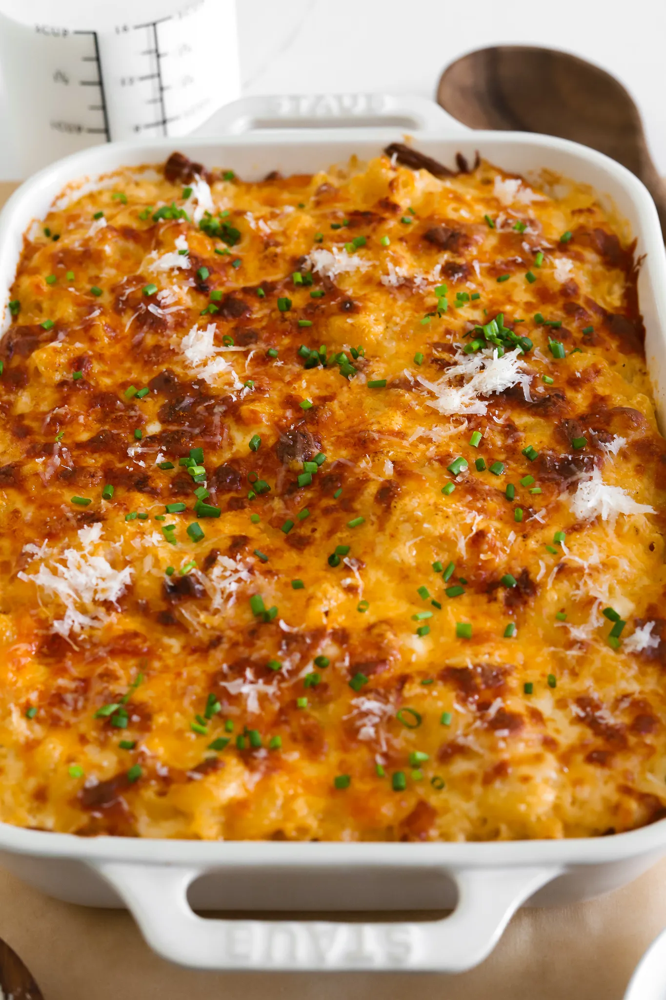

Home
Mac and Cheese

Macaroni and cheese is the ultimate comfort food and the best side on the dinner table! It’s so ooey and goeey on the inside and then perfectly golden and crispy on the outside – it’s the best of both worlds. This truly is the only Mac and Cheese recipe you'll ever need!
Ingredients
- 1 pound large elbow macaroni
- Salt, to cook pasta
- 6 tablespoons unsalted butter
- 3 tablespoons all-purpose flour
- 1 tablespoon minced garlic
- 3 3/4 cup warm heavy cream
- 3 tablespoons cream cheese, softened
- 1 1/2 cup sharp cheddar, shredded
- 1 cup Colby jack, shredded
- 1/2 cup smoked gouda, shredded
- 2 teaspoons smoked paprika
- 1 1/2 teaspoon dry mustard powder
- 1/2 teaspoon black pepper more to taste
- 1/2 to 1 teaspoon salt, to taste
- pinch of nutmeg
- pinch of cayenne
- pinch of cayenne
- 2 cups shredded cheese, of choice
- optional: chopped parsley or chives and grated parmesan on top
Steps
- Bring a large pot of salted water to a boil. Add pasta and cook a minute below al dente. The pasta will finish cooking in the oven.
- Heat a saucepan or pot over medium heat. Add the butter. Once melted, whisk in the flour and cook for 2 to 3 minutes until it just starts to bubble and turns a yellow-golden color.
- Add in the garlic and saute with the roux for another minute.
- Pour in the heavy cream slowly and whisk continuously until smooth. Then add the cream cheese, dry mustard powder, smoked paprika, black pepper, nutmeg, cayenne powder, and salt. Whisk together until smooth. Continue to cook the sauce for 3 to 4 minutes or until it thickens.
- Reduce the heat to low or take off the heat and add the sharp cheddar, Colby jack, and smoked gouda. Whisk together until there are no more clumps and the sauce is completely smooth. Taste and adjust anything to your liking.
- Once the pasta is done cooking, drain it and toss it into the sauce immediately. Mix together in a large baking dish.
- Cover the top with your shredded cheese of choice. I personally love opting for just Colby Jack or a blend of the three cheeses.
- Bake at 350°F for 15 minutes. Then turn to broil for a few minutes just until the top is golden and crispy - make sure to monitor it closely.
- Top it off with chopped parsley or chives and grated parmesan and enjoy!